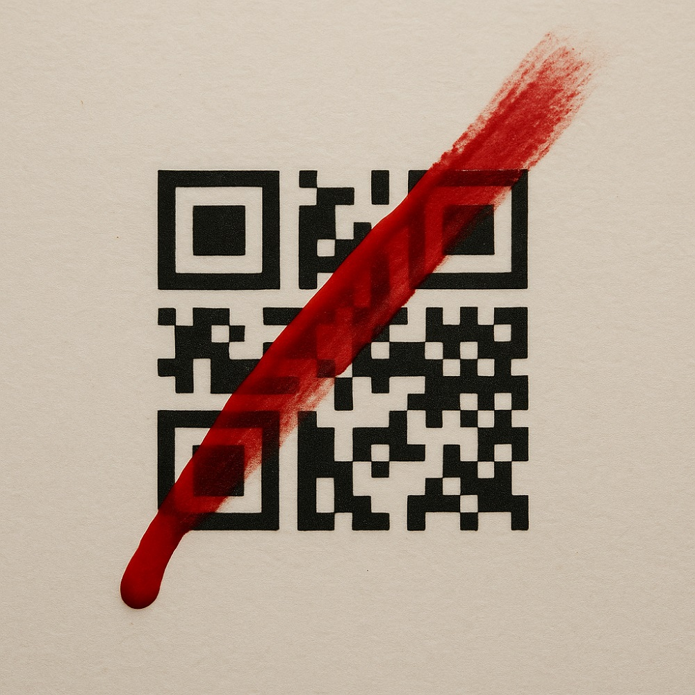

Conferencias | La más reciente

Contar para permanecer
| Conferencia de Edgardo Civallero | Publicado el 21 de noviembre de 2025 |
Versión completa de la conferencia presentada en un encuentro profesional organizado por BibloRed (Bogotá, Colombia, 21.nov.2025). Se trata de un trabajo publicado aquí para su lectura y discusión.
Las bibliotecas de Bogotá conforman un ecosistema poderoso pero frágil: diverso, desigual, a menudo precario y rico en un conocimiento que rara vez se plasma por escrito. Esta conferencia y la reflexión académica que la acompaña sostienen que sistematizar las experiencias, comunicar con intención y escribir desde la práctica no son deberes burocráticos, sino actos de memoria, resistencia y continuidad profesional. Desde las bibliotecas comunitarias improvisadas en los barrios hasta los sistemas universitarios con infraestructuras consolidadas, todas generan una inteligencia situada que corre el riesgo de desaparecer si no se narra. La ponencia y el texto, en conjunto, proponen una idea simple y urgente: el futuro de las bibliotecas de la ciudad depende de su capacidad para explicar qué hacen, por qué es importante y cómo sobreviven, transformando la práctica cotidiana en memoria colectiva en lugar de en amnesia institucional.
Descargar la versión completa.
Todas las conferencias pueden encontrarse incluidas en la sección Cajón de sastre.
Navsuv | El resumen de la quincena

| Publicado el 2 de noviembre de 2025 |
¿Y si los vocabularios se comportaran como micelios, los archivos como ecosistemas y el acceso como un derecho y no como un examen de alfabetización? Esta entrega recorre dos semanas de textos sobre microtesauros, interoperabilidad ecológica, memoria del bosque alto-andino y los guiones excluyentes de la interfaz escrita, correspondientes al período 3-16 nov. 2025.
Continuar leyendo...
Blogs
Crónicas de un biblio-naturalista | La entrada más reciente

Nada existe de forma aislada
| Archivística ecosemiótica desde el bosque nublado (03) | Publicado el 7 de noviembre de 2025 |
Bajo el suelo del bosque, una sintaxis oculta enlaza la vida: raíces, hongos y memorias que intercambian significados a través de fibras de relación. Cada señal es una historia de supervivencia, cada descomposición un comienzo. ¿Y si nuestros archivos aprendieran a recordar así?
Continuar leyendo...
Todas las entradas del blog.
Blog Bitácora de un bibliotecario | La entrada más reciente
Los metadatos como mediación
| Metadatos como revuelta (08) | Publicado el 25 de noviembre de 2025 |
Una traducción nunca es neutral. Esta entrada entra en el espacio tenso entre vocabularios, donde el sentido se negocia, se discute o se rehúsa. Explora la mediación como infraestructura: una membrana conectiva que permite que dos o más mundos se encuentren sin plegarse uno sobre otro, y donde la interoperabilidad deja de ser obediencia para convertirse en ética.
Continuar leyendo...
Todas las entradas del blog.
Notas críticas | La entrada más reciente

El usuario analfabeto
| Lidiando con el literocentrismo (09 de 10) | Publicado el 14 de noviembre |
Las bibliotecas proclaman acceso universal, pero sus puertas están hechas de texto. Cada cartel, formulario, catálogo y pantalla supone un lector, y castiga a quien no lo es. La no-lectura se convierte en defecto, en vergüenza, en una falta que debe "corregirse". En esta economía silenciosa, la biblioteca no excluye por fuerza, sino por expectativa: recibe al usuario con una página y espera obediencia. Mientras leer siga siendo el precio de entrada, la institución seguirá ciega a todos los saberes que no caben en una línea.
Continuar leyendo...
Todas las entradas del blog.
Cajón de sastre | La entrada más reciente

Nemboro. El poder de las ficciones
| Serie de 6 entradas | Publicado el 23 de septiembre de 2025 |
Trescientos rostros tejidos me devolvían la mirada con ojos vacíos, cargando historias de ritual, protección y transformación. Al principio parecían máscaras ancestrales, pero ¿y si fueran documentos, textos escritos en fibra y tinte? Esta serie sigue el encanto de aquel encuentro con las llamadas nemboro en Panamá, y la inquietante revelación de que incluso los artefactos inventados pueden moldear archivos, mercados y memoria. De la seducción a la ruptura, del objeto a la ontología, estos textos exploran cómo la bibliotecología misma se enreda en ficciones, y por qué incluso los mitos dejan metadatos tras de sí .
Continuar leyendo...
Todas las entradas del blog.
Temas clave
Epistemologías insurgentes y decolonialismo
Saberes desplazados, negados, ilegibles. Producidos y recordados a la fuerza. Pensados desde el Sur, desde el margen y desde el grito no documentado. Lo que no cabe en el archivo. Memoria sin pedir permiso.
→ Ver másSemántica crítica y compostaje de archivos y bibliotecas
Compostar bibliotecas y archivos "muertos" para que de ellos brote algo distinto: transformar estructuras rígidas en sistemas vivos y dinámicos, capaces de nutrir nuevas formas de conocimiento. Tecnologías del conocimiento al servicio de otras lógicas, basadas en la conectividad, la descentralización y el respeto por la diversidad epistemológica. Conexiones inesperadas, tejidos insospechados. Modelar el mundo sin replicar su violencia, construyendo arquitecturas de datos que reconocen poder, contexto y resistencia.
→ Ver másTejido de memorias y significados para producir nuevos saberes
Tejer con recuerdos, residuos y gestos. Unir fragmentos para construir algo más grande. Hacer objetos, publicaciones y herramientas con memoria adentro. No se trata de representar: se trata de encarnar. Cada forma es también una forma de saber.
→ Ver másMárgenes, justicia epistémica, y documentos "otros"
Conocimientos y memorias “otros”. Los documentos que no se nombran. Oralidad, grafiti, cestería, cerámica, textiles, peinados, territorio: archivos sin papel. La igualdad de los sistemas de conocimiento. Ecologías del saber, redes epistémicas no hegemónicas. Trabajar en los márgenes es producir centro.
→ Ver másSonidos y silencios
Instrumentos musicales como archivos. Territorios sonoros como bibliotecas. Cantos, ruidos, ecos, vibraciones: formas de registrar lo indecible. Y los silencios que gritan. Escuchar es también una forma de archivar.
→ Ver másUn territorio en construcción

Este espacio no es un portafolio. No es un sitio académico, una vitrina profesional ni un currículum digital.
Es un paisaje tejido. Irregular, estratificado y, a veces, opaco. Aquí se entrelazan bibliotecas, clasificación, silencio, memoria y epistemologías rotas. No como temas, sino como tensiones.
No hay una estructura clara. Algunos hilos desaparecerán. Otros resonarán más adelante. No espero que sigas todo. Solo que escuches.
Nada aquí está optimizado. Ni para buscadores. Ni para clics. Ni para la legibilidad. Este no es un lugar de paso. Es un lugar para detenerse.
Me llamo Edgardo Civallero. Bienvenidxs a mi sitio web.
[Una parte clave de mi trabajo actual, centrado en la investigación, clasificación y documentación de instrumentos musicales como portadores de memoria y dispositivos epistémicos, está reunida en Instrumentarium, un sitio creado y dirigido por mí, Edgardo Civallero. Allí exploro los instrumentos como documentos vivos, experimento con nuevas taxonomías, y propongo formas alternativas de escuchar y narrar el mundo.]
Leer mi perfil completo...